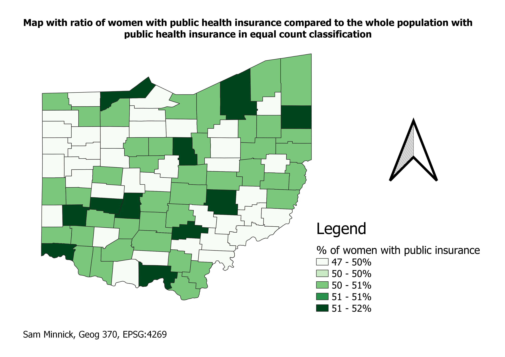
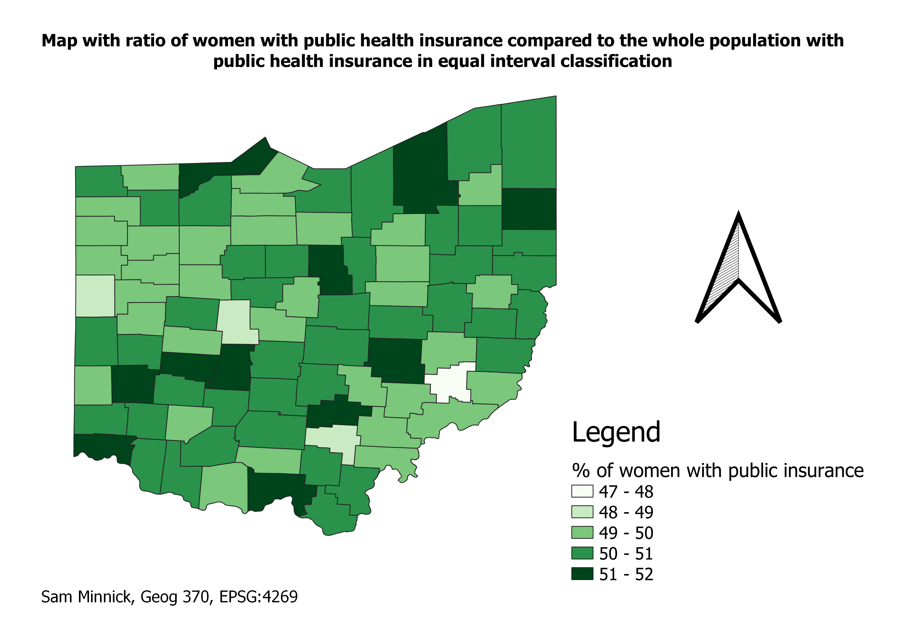

Homework 8: Census data choropleth with ratios
Samantha Minnick
I noticed that pretty breaks and equal interval created the same classification while equal count hada different look. I feel that the equal count is less appealing to read because of all the ight colored spaces that are not in the other two classifications.
equal count calssification

equal interval classification

pretty breaks classification
Data used for this project
Link to cleaned csv dataset on GitHub
Link to geoJSON on GitHub